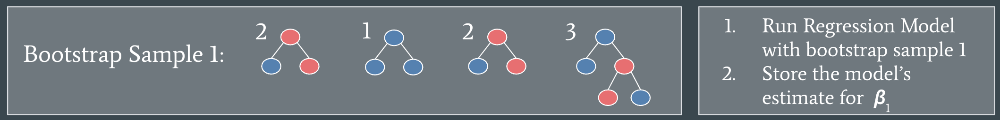
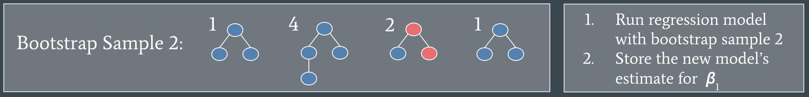

Blog
Welcome to my blog! Check in for posts about data, design, the creative process behind my projects, random (somewhat relevant) thoughts I have, and more. I hope reading some of my posts helps you get to know me and how my brain works.
Click on the titles on the side to jump to different posts :) —->
Pull Yourself up by Your (Block) Bootstraps
Hello again,
Today I’ll be writing about the concept of block bootstrapping and how I used it in my research project at UC Irvine this summer (2025). As part of our final presentation at UCI, I got to teach the audience about this concept to explain my research findings and wanted to share it here.
Bootstrapping is a statistical method used to estimate the uncertainty of a desired statistic. It’s typically used when you don’t know the sampling distribution of the desired statistic, and therefore cannot use traditional methods of uncertainty estimation that use theoretical sampling distributions.
Why do we care about uncertainty and what is a sampling distribution? I’m so glad you asked! Let’s play a little imagination game to understand these concepts.
Imagine you want to know the average number of pets your friends have. Random, I know, but easy to understand. To do this, you ask 5 people you know how many pets they have. You then take the mean of the number of pets for these 5 people. Say you get an average of 2.2, so you tell your friends that on average, people have 2.2 pets each. Maybe you have a friend with no pets, or a friend with 8 pets, and they might ask “how sure are you about that?”, because your estimate doesn’t match their experience or what they would have guessed as the average number of pets.
This is why we care about uncertainty! We want to be able to answer the “how sure are you about your estimate?” question.
In this scenario, we could easily repeat our “survey”. Maybe we ask 5 more friends, find the mean number of pets those 5 have and compare it to our first estimate. This would give us some information on how accurate our first estimate was. To get an even better understanding, we could repeat our “survey” many times, each time asking 5 more friends and finding the mean number of pets. Each time we do this, we are going to get a slightly different mean, because people are different (there is variation in the data!). We can take all of these different means and plot them on a histogram that might look something like this:
The histogram shows our true sampling distribution. The possible values for the mean of each sample are along the x axis. The height of each bar (the y-axis value) is the number of samples at the corresponding x-axis (mean) value. We can then use this sampling distribution to show how sure we are about our answer. If the histogram showed a very wide, spread out, distribution, we’d be less certain about our estimate than if the histogram showed a very tall and tightly bounded distribution.
Now in real life, with real data from a survey, experiment, consumer reports, or any other sample from a population, we usually can’t redo our experiment or recollect data over and over again. It would be expensive and timely to do that, and well unnecessary because we can use statistics instead (yay!). There are a couple of options for estimating uncertainty. We can either use known information about our data to make assumptions and use an according theoretical sampling distribution, or we can simulate the sampling distribution of our data using bootstrapping. If your data follows certain distribution specific assumptions, using well known sampling distributions like the normal distribution or binomial distribution is a good choice and makes uncertainty quick and easy to calculate. If you don’t know much about your data, or it violates common distribution assumptions, bootstrapping is a better option for estimating uncertainty.
In general, bootstrapping works by simulating the sampling distribution. Since we can’t take new samples of data from the population to get the real sampling distribution, we treat our original sample as the “population” and randomly re-sample (with replacement) our “population” many times. At each re-sample, we calculate our statistic of interest, and store it. After repeating this process, we can use percentiles to calculate confidence intervals, showing the uncertainty of our original point estimate.
Block-bootstrapping is a version of bootstrapping that is designed for dependent or highly correlated data. This is what I used in my project! The main difference from regular bootstrapping is that instead of re-sampling every individual data point, the data is grouped into clusters or blocks, and then blocks are chosen at random for each re-sample. There are many different methods for how to choose blocks or clusters of data, depending on the specifics of your data. This method is commonly used in time-series or spatial data, where there are groups of highly correlated or dependent data.
Before I get into how I used this method, let me give a quick intro to my project and our dataset. The goal of our project was to understand the recruitment networks of internally displaced sex workers in Ukraine. The data was collected by the Alliance for Public Health, an NGO in Ukraine, using recruitment driven sampling. Individuals in the population of interest are chosen by the NGO, they are called the ‘seed’, they take the survey, and are given a set number of ‘coupons’ to give to people they know who are also eligible for the survey. Those people come in and take the survey and they get coupons, and so on. The resulting data is structured as trees, each tree starting with the seed. We could assume independence of the trees, because seeds are selected to cover a diverse population, and to reach networks that won’t overlap. However, since each tree is built by individuals recruiting their friends or associates, the data on individuals within the same tree is dependent data, because an individual being in the study is dependent on them being recruited by a friend. This is an example of one of our data trees. Blue dots show local individuals, and red dots show internally displaced individuals.

The analysis we did on this individual-level data was run binomial regressions to understand how the displacement status of the recruiter impacted the displacement status of the respondent. We needed to estimate the uncertainty of our regression coefficients, but could not use standard regression theory (theoretical sampling distributions) because that requires the assumption of independent data, which our data did not meet. However, since we had independence of trees, and each tree was essentially a block of dependent data, we used block bootstrapping to estimate our uncertainty.
First, we ran the regression on our original sample, aka our entire dataset of different trees, and recorded the regression coefficient, \(\beta_1\) as our point estimate.

Next, we re-sampled for by trees. We randomly select four numbers between 1 and 4 and take the data from the corresponding trees as our new sample.

We repeat this process again,

Each time, we will have different trees included to run our regression model with. We repeated this process 500 times. Then we can use quantiles (aka percentiles) to construct confidence intervals for our regression model coefficients. For a 95% confidence interval this would be the 2.5 percentile and the 97.5 percentile.
There are some important things to note when we perform block bootstrapping.
Thanks for reading, and happy bootstrapping!
From, a certainly fun uncertainty estimator
Why I Love Data Visualization
Lately, I’ve been trying to navigate through the differences in data science, data analytics, data engineering, and all the other options for careers generally dealing with data. Throughout all of the different roles and responsibilities, my favorite data skill has to be data visualization.
I’ve always been really interested in art, color theory, visual aesthetics, fashion, and general design. In high school I even seriously explored being a graphic design major, and as a little kid I wanted to animate movies. Another two things I have always loved are puzzles and math. In college, I’ve really enjoyed learning to code because it’s a bit of both puzzles and math. Adding it all together, we get to data visualizations. It’s a perfect combination of all the things I find fascinating. Time flies by when I’m working on any data visualizations.
Another thing to know about me is that I love to help, which really is the nail in the coffin for my love of data visualizations. The whole point of creating good data visualizations is that they help people understand complex information.
I want my career to be contributing to the world in a way I think is important.
If you read my thoughts on gen Z and AI, you’ll know I think my generation needs some help maintaining our critical thinking skills (aka not letting AI make all of our decisions for us). What follows is my thought process on how creating more data visualizations on current, informative topics would be of benefit to young people.
Naturally, I began to think about how I could apply my skills to help my generation and the future ones continue to make informed decisions for themselves. Thinking through my given information (or knowns, thanks math), we’ve got,
- a population of young people overstimulated by information overload and decision fatigue
- contained within a digital space, an era of screens, video games, brigh, flashing colors, and 15 second videos
- screen dependency that has led to health issues galore, including, but definitely not limited to, severe attention span issues
With this information, I thought back through my question. How can I help people get engaged in interacting with information to make their own decisions? Well, with the target audience in mind, it seems obvious: make the information visual. While a histogram is never going to keep up with a TikTok video, if it’s visually aesthetic, easy to read, and clearly communicates relevant information, at least people can look at it and learn something, which is a win in my book. If it can highlight some frequently overlooked information, or lead one’s eye to an important pattern even better. If it makes even one person stop and think a little deeper about the topic, and why such a pattern might emerge, that’s hitting the jackpot.
Now, keep in mind data visualizations can easily be skewed (math pun unintended, but it made me laugh, so it stays) to make comparisons seem more drastic than they really are, just by omitting zero in the y-axis. If it becomes overly visual and dynamic, it can distract from the content, or even worse just be confusing and hard to read. Use the wrong color combination and anyone who is color blind won’t be able to understand the visual. If someone doesn’t write alternate text, visually impaired people won’t get the information. Needless to say, there are many ways data visualizations can go wrong, and not serve their original purpose, which is to communicate important information in an easily digestible way.
I want to create relevant and engaging data visualizations, so that all people can continue to make their own well-informed decisions, and focus on living in the real world instead of a virtual one.
Cheers, a data viz enthusiast
Gen Z and AI
My generation has grown up in a world where almost any information we could ever want to know is only a few clicks away. Take any given day, usually mid conversation, I’ll realize I don’t know something, and if the person I’m talking to doesn’t know either, I usually say, “I’m gonna look it up”.
I want to know the correct answer, not just the speculation of someone (my friend) who’s far from an expert. The amazing thing is I can find out the real answer, with just a few taps on a screen. Well I can find out one answer,
and another answer from three news articles about the topic,
another answer from a nonprofit’s website,
and another similar answer from an academic paper,
what six to seven influencers think about the subject,
and a reddit feed, or two, of questionable (at best) advice on the topic,
and I can see some related images,
about four videos teaching me about the topic,
and of course six different companies trying to sell me whatever it is I’ve looked up.
There is so much data on the internet, and so many answers. Growing up, I remember being taught that if I could find three sources that say the same thing, that it’s probably the right answer. I was 10, and doing a research project on giraffes. With all the information and data out there, three sources might not be enough anymore. Not to mention what I want to know is a lot more complex than how tall a baby giraffe is.
Not to worry though, now we have AI to aggregate and summarize all that information on the internet. It’ll give you a concise answer and even show its sources. Great! Well, is it really? I mean yes it is, it saves time and it does make finding an answer easier. But, is easier always better?
I’m worried about my generation and the ones after mine. I’m worried that we will rely too heavily on AI, not only to answer our questions, but to make our decisions for us. I’ve already seen my friends use it for everything from help in school to answering their Hinge messages. If we’re not careful, AI is going to turn into our toxic, co-dependent relationship.
We need to set some intentional boundaries with AI. The widespread availability of AI is amazing, but it also creates a big challenge for us. That challenge is having the awareness and discipline to know when not to use it. We need to remember that AI is a tool, and should only be used as such.
I could go rambling on about why we need to spend more time in the real world and less in the virtual one, but for now, I’ll leave it here.
Love, a laughably anti-tech tech girl